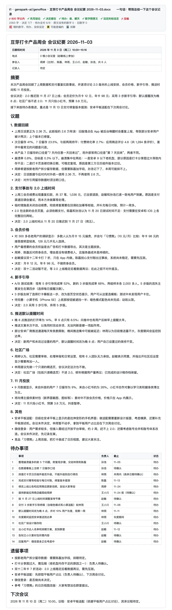
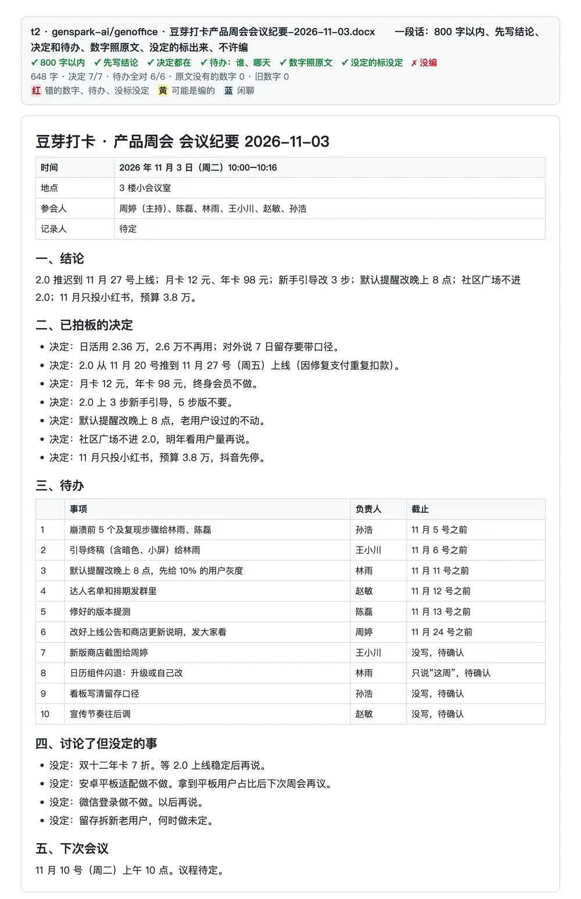

genspark-ai/genoffice: meeting summary test
Test of 2026-11-08. Installed from its README in a throwaway sandbox, then used by Claude Code (Claude Opus 5.5) to summarise the same made-up meeting record, an automatic transcript of a product team's weekly meeting of about 5,000 字, from two requests in the person's words. Whenever the build stopped short of a finished summary, it got the same reply. A separate tester session, with no tool loaded, checked the summary against 7 checks fixed before the runs: six scripted against an answer key written with the record, and one, anything the record does not support, read by the tester sentence by sentence. Everything in the record is made up. All results · The meeting record · The checklist · The answer key
Install: installed the meeting-minutes skill (only SKILL.md) to ~/.claude/skills/meeting-minutes using `mkdir -p ~/.claude/skills && cp -r ~/src/skills/recommended/meeting-minutes ~/.claude/skills/meeting-minutes`; ~/work and 会议记录.txt were not changed (repo commit 0ac588ffc435)
Why it was in the test (our note before the run): Genspark 开源办公套件里的会议纪要 skill，规则最贴这次的检查：「讨论中的倾向不算决定」「缺的写待确认，不猜」，而且交付 Word 文档。注意：它本来是给 GenOffice 自带的 AI 用的，这里只把这一个 skill 装进 Claude Code。
One line
The request, word for word: 「帮我总结一下这个会议记录。」
5 of 7 checks passed. 2,363 字, in 豆芽打卡产品周会 会议纪要 2026-11-03.docx. Built in 2.1 minutes; it stopped to ask 1 time(s); how it ended: finished. Usage at API prices: $0.52 (2.3 times the run with no tool on this request).
| Check | Verdict | What decided it |
|---|---|---|
| At most 800 字 | fail | 2363 字（上限 800） |
| Opens with what was decided | pass | 开头 150 字里写到 6 条决定（D1、D2、D4、D5、D6、D7）；开头：本次产品周会回顾了上周数据和支付重复扣款事故，并逐项讨论 2.0 版本的上线安排、会员价格、新手引导、推送时间和 11 月投放。 会议决定：2.0 推迟到 11 月 27 日上线；会员定价为月卡 12 元、年卡 98 元；采用 3 步新手… |
| All 7 decisions | pass | 7/7 条决定写到了 |
| All 6 tasks, each with its owner and due date | pass | 6/6 条待办负责人和截止日期都对 |
| Every figure as the record says it | pass | 103 个数字，0 个原文里没有；旧数字当成现在的 0 处 |
| The 3 open points marked not decided | pass | 3/3 件没定的事写到并标了没定 |
| Nothing the record does not support (the tester) | fail | 3 statement(s) the record does not support, listed below |
What the tester found the record does not support
| 6 | 提供新版应用商店截图给周婷 | 王小川 | 11-24 前（待确认） | 待办 |
The record gives no date for this. 王小川 only says 「截图我手上有一版新的，改公告的时候一起给你，婷姐」. The 11-24 date is 周婷's deadline for the announcement, not one set for 王小川's screenshots. Adding 「待确认」 does not change that the date was made up.| 记录人 | 待定 |
The record never mentions a note-taker. The summary adds this field and says it is 'to be decided', which the meeting never discussed.本产品 7 日留存的口径是“7 天内任意一天回来过”，而外部常用口径是“第 7 天回来”，两者不同。
赵敏 hedged this: 「别人家的 7 日留存口径好像是“第 7 天还回来”」. The summary states as fact that this is the common outside definition. The record supports the difference only as her uncertain impression. This is minor.
Where the tester doubted how the script read it
Some of these led to the script fixes listed in RESULTS.md; every verdict on this page comes from the fixed script.
- Opens with what was decided: The script took the metadata table (日期和时间 / 地点 / 参会人 / 记录人 rows) as the opening block. Those rows only give the meeting's date, time, place and people, which the checklist says to skip; the one questionable row is 「记录人 | 待定」. After the table and the heading 「# 摘要」, the first paragraph is 「本次产品周会回顾了上周数据和支付重复扣款事故，并逐项讨论 2.0 版本的上线安排、会员价格、新手引导、推送时间和 11 月投放。会议决定：2.0 推迟到 11 月 27 日上线；会员定价为月卡 12 元、年卡 98 元；采用 3 步新手引导；默认提醒改为晚 8 点……」. Its first 150 字 contain at least 4 decisions (D1, D2, D4, D5). If 记录人 counts as a people line, this check should pass. A reviewer should decide.
The tester's notes
It is the only file in output/, a Word document, and it opens and reads cleanly. It is written in Chinese and names are spelt correctly. It is really full minutes rather than a summary: 2363 字 against an 800-字 limit, with 8 topic sections, a 14-row task table, an open-items list and the next meeting. The 14-row table mixes the 6 real tasks with loose asks (S1–S10-style items such as 宣传节奏, 存档, 素材包, 回复用户), giving most of them 待确认 or vague due dates, so the firm tasks don't stand out. The 双十二 item appears under a 「决定：」 label but its content says 暂不定. The metadata table has an empty header cell in its first column. No small talk was kept.
The summary with the script's marks
The picture shown in our video. Red: a figure the record does not say, an old figure given as current, a task with the wrong owner or date, an open point not marked open. Yellow: lines the script flagged for the tester to read (candidates, not verdicts; the tester's list above is the verdict). Blue: small talk.

The summary as delivered (豆芽打卡产品周会 会议纪要 2026-11-03.docx)
# 豆芽打卡产品周会 会议纪要 2026-11-03 | 日期和时间 | 2026 年 11 月 3 日（周二）10:00–10:16 | | 地点 | 3 楼小会议室（赵敏线上参加） | | 参会人 | 周婷（主持）、陈磊、林雨、王小川、赵敏、孙浩，共 6 人 | | 记录人 | 待定 | # 摘要 本次产品周会回顾了上周数据和支付重复扣款事故，并逐项讨论 2.0 版本的上线安排、会员价格、新手引导、推送时间和 11 月投放。 会议决定：2.0 推迟到 11 月 27 日上线；会员定价为月卡 12 元、年卡 98 元；采用 3 步新手引导；默认提醒改为晚 8 点；社区广场不进 2.0；11 月只投小红书，预算 3.8 万元。 接下来按待办表推进，重点是 11 月 13 日支付修复版本提测；安卓平板适配在下次周会讨论。 # 议题 ## 1. 数据回顾 - 上周日活更正为 2.36 万。此前报的 2.6 万有误：旧版埋点在 App 被后台唤醒时会重复上报，导致部分安卓用户被计两次；上个版本已修复。 - 次日留存 41%，7 日留存 23.5%，与前两周持平；付费转化率 2.7%；应用商店评分 4.6（共 1,284 条评价），差评中最常见的问题是闪退。 - 本产品 7 日留存的口径是“7 天内任意一天回来过”，而外部常用口径是“第 7 天回来”，两者不同。 - 崩溃率 0.8%，目标是 0.3% 以下。崩溃集中在两处：一是安卓 9 以下老机型，部分原因是打卡分享图过大导致内存不足；二是打卡页连续切换日期，可稳定复现，原因是第三方日历组件版本过旧。 - 周婷希望按新老用户拆分留存数据，但需要陈磊加字段，孙浩记下了，本周可能排不上。 - 决定：日活数据今后对内对外统一使用 2.36 万，不再使用 2.6 万。 - 决定：对外引用留存数据时须注明口径。 ## 2. 支付事故与 2.0 上线时间 - 上周三会员续费出现重复扣款，共 37 笔、1,036 元，已全部退款，赵敏和孙浩已逐一致电用户致歉。原因是支付渠道回调会重试，而本方未做幂等处理。 - 临时措施是关闭自动续费。彻底修复需要在回调处加幂等校验，并补充每日对账，预计一周多。 - 2.0 包含新的会员页面，必须依赖支付。陈磊和孙浩认为 11 月 20 日测试时间不足：支付需要在安卓和 iOS 上各完整回归两轮。 - 决定：2.0 上线时间从 11 月 20 日推迟到 11 月 27 日（周五）。 ## 3. 会员价格 - 对 300 多名老用户的调研显示：多数人认为月卡 15 元偏贵，并会与「习惯熊」（10 元/月）比较；年卡 98 元的接受度明显较高，128 元几乎无人选择。 - 用户最想要的会员权益是去广告和打卡数据导出，其次是主题皮肤。 - 周婷、陈磊反对终身会员，理由是没有续费收入，且服务器成本是持续的。 - 赵敏提议双十二年卡打 7 折，只在 App 内做。陈磊担心支付刚出过事故，系统尚未稳定，需要先压测。 - 决定：月卡 12 元，年卡 98 元，不做终身会员。 - 决定：双十二活动暂不定，等 2.0 上线稳定后看数据再议；在此之前不对外提及。 ## 4. 新手引导 - A/B 测试结果：现有 5 步引导完成率 52%，新的 3 步版完成率 68%，两组样本各 2,000 多人。5 步版的流失主要发生在第四步（选择每日提醒次数）。 - 3 步版去掉了选择打卡模板这一步，改为首页空状态提示，用户可从这里选模板；测试中未发现用户卡住。 - 待完善：小屏手机（iPhone SE）上底部按钮被遮挡一半；暗色模式配色尚未完成；动效从简。 - 决定：2.0 采用 3 步引导，弃用 5 步版。 ## 5. 推送默认提醒时间 - 晚 8 点推送的打开率为 14%，早 9 点只有 8.5%；问卷中也有用户反映早上提醒太早。 - 推送文案本次不改，以免同时改动多项、无法判断是哪一项起作用。 - 部分安卓厂商推送通道每天有条数限制，晚间推送集中可能被延迟；林雨认为目前推送量不大，灰度期间会监控到达率。 - 决定：新用户和未改过设置的用户，默认提醒时间改为晚 8 点；用户自己设置过的保持不变。 ## 6. 社区广场 - 周婷认为，社区需要审核、处理举报和日常运营，现有 6 人团队无力承担。赵敏表示同意，并指出开社区后运营至少需要再加一人。 - 林雨提议先做一个只读的精选页，会议决定这次也不做。 - 决定：社区广场（包括只读精选页）不进 2.0，明年根据用户量再议；已完成的设计稿存档保留。 ## 7. 11 月投放 - 9 月数据显示，来自抖音的用户 7 日留存为 9%，来自小红书的为 26%。小红书合作对象以学习类和健身类博主为主。 - 将向博主提供素材包（新界面截图、图标等）；素材中不放会员价格，价格只在 App 内展示。 - 决定：11 月只投小红书，预算 3.8 万元，抖音暂停。 ## 8. 其他 - 安卓平板适配：目前在安卓平板上显示的是拉伸变形的手机界面；做适配需要重新设计版面、考虑横屏，还要补充平板测试机。会议未作决定，林雨暂不动手，拿到平板用户占比后在下次周会讨论。 - 微信登录：用户需求较多，但接入需经过开放平台审核，约 2 周，赶不上 2.0；还需考虑账号合并和账号体系改造。会议未作决定，先记录在案。 - 竞品「习惯熊」上周改版，把打卡做成了日历视图，建议大家关注。 # 待办事项 | | 事项 | 负责人 | 截止 | 状态 | | 1 | 整理崩溃最多的前 5 个问题，附复现步骤，交给林雨和陈磊 | 孙浩 | 11-05 | 待办 | | 2 | 在数据看板上注明 7 日留存口径 | 孙浩 | 待确认 | 待办 | | 3 | 排查打卡页日历组件能否升级，不能升级则自行修改 | 林雨 | 本周内（具体日期待确认） | 待办 | | 4 | 完成支付幂等校验与每日对账，修复版本提测 | 陈磊 | 11-13 | 待办 | | 5 | 修改上线公告和应用商店更新说明，发给大家审阅 | 周婷 | 11-24 | 待办 | | 6 | 提供新版应用商店截图给周婷 | 王小川 | 11-24 前（待确认） | 待办 | | 7 | 按 11 月 27 日上线时间调整宣传节奏 | 赵敏 | 待确认 | 待办 | | 8 | 交付 3 步新手引导终稿（含暗色模式和小屏适配）给林雨 | 王小川 | 11-06 | 待办 | | 9 | 默认提醒时间改为晚 8 点，并对 10% 用户灰度，观察一周 | 林雨 | 11-11 | 待办 | | 10 | 灰度期间监控安卓推送到达率 | 林雨 | 灰度期间 | 待办 | | 11 | 社区广场设计稿存档 | 王小川 | 待确认 | 待办 | | 12 | 出小红书达人名单和排期方案，发到群里 | 赵敏 | 11-12 | 待办 | | 13 | 告知王小川素材包所需内容 | 赵敏 | 待确认 | 待办 | | 14 | 回复用户：微信登录正在考虑中 | 赵敏 | 待确认 | 待办 | # 遗留事项 - 按新老用户拆分留存数据：需要陈磊加字段，排期待定。 - 打卡分享图过大，需压缩（老机型内存不足的原因之一）：负责人待确认。 - 双十二年卡 7 折活动：2.0 上线稳定后看数据再议，需先压测。 - 安卓平板适配：先获取平板用户占比（负责人待确认），下次周会讨论。 - 微信登录：是否做尚未决定。 - 参考「习惯熊」的日历视图改版：大家有想法在群里提出。 # 下次会议 2026 年 11 月 10 日（周二）10:00。议程：安卓平板适配（依据平板用户占比讨论），其余议程待定。
Where it stopped, and got the reply 「我不懂这些，你按你推荐的来，继续做。」
这个工具是装好的 **meeting-minutes**（会议纪要）技能。它会把会议记录整理成一份正式的会议纪要：先写会议信息，再按议题列出讨论要点和已拍板的决定，最后给出待办表（谁做、做什么、什么时候完成）和遗留事项，交付一份 Word 文档。 它的第一步要求先确认会议的基本信息，记录里没写的要问你**一次**。我已经读完这份记录：主题、时间、地点、参会人、主持人都写了，只缺一项。 **问题：这次会议的记录人是谁？** 如果你不知道或者不想填，回复"不知道"就行，纪要里这一项会写成"待定"。你回答后我就接着生成文档。
One paragraph
The request, word for word: 「帮我把这个会议记录整理成一份总结，发给没来开会的同事看。全文 800 字以内。第一段先写结论：这次会最后定了什么。然后列出所有拍板的决定，再列出所有待办，每一条写清楚谁负责、哪天之前做完。数字一律照原文写，不要改，也不要自己换算。讨论了但没定下来的事单独列出来，标明“没定”，不能写成已经定了。原文里没有的东西一个字都别编，包括负责人和截止日期。」
6 of 7 checks passed. 648 字, in 豆芽打卡产品周会会议纪要-2026-11-03.docx. Built in 1.9 minutes; it stopped to ask 1 time(s); how it ended: finished. Usage at API prices: $0.46 (1.7 times the run with no tool on this request).
| Check | Verdict | What decided it |
|---|---|---|
| At most 800 字 | pass | 648 字（上限 800） |
| Opens with what was decided | pass | 开头 150 字里写到 6 条决定（D1、D2、D4、D5、D6、D7）；开头：2.0 推迟到 11 月 27 号上线；月卡 12 元、年卡 98 元；新手引导改 3 步；默认提醒改晚上 8 点；社区广场不进 2.0；11 月只投小红书，预算 3.8 万。 |
| All 7 decisions | pass | 7/7 条决定写到了 |
| All 6 tasks, each with its owner and due date | pass | 6/6 条待办负责人和截止日期都对 |
| Every figure as the record says it | pass | 45 个数字，0 个原文里没有；旧数字当成现在的 0 处 |
| The 3 open points marked not decided | pass | 3/3 件没定的事写到并标了没定 |
| Nothing the record does not support (the tester) | fail | 2 statement(s) the record does not support, listed below |
What the tester found the record does not support
| 记录人 | 待定 |
The record names no note-taker and nobody discussed choosing one (it is an automatic transcript); marking the note-taker as 'pending' states something the meeting never said.11 月 10 号（周二）上午 10 点。议程待定。
The record gives only the date and time of the next meeting (周二，11 月 10 号上午 10 点); it says nothing about its agenda being undecided. The only item explicitly put to next meeting is the tablet question.
The tester's notes
Single Word file, opens cleanly; Chinese throughout; names spelt correctly. Tables (meeting info, todo list) extract fine; the todo table has an unlabelled number column. The todo table mixes the 6 real tasks (rows 1–6) with 4 loose self-commitments (rows 7–10) marked '没写，待确认' / '只说“这周”，待确认' for the due date — dates not invented, but a reader may take rows 7–10 as assigned tasks of equal weight. The open-points section adds a 4th item (留存拆新老用户) beyond the 3 in the key; it is supported by the record. Conclusion paragraph repeats the decisions list almost verbatim. Script verdicts all match my reading of the lines; no misreads found.
The summary with the script's marks
The picture shown in our video. Red: a figure the record does not say, an old figure given as current, a task with the wrong owner or date, an open point not marked open. Yellow: lines the script flagged for the tester to read (candidates, not verdicts; the tester's list above is the verdict). Blue: small talk.

The summary as delivered (豆芽打卡产品周会会议纪要-2026-11-03.docx)
# 豆芽打卡 · 产品周会 会议纪要 2026-11-03 | 时间 | 2026 年 11 月 3 日（周二）10:00–10:16 | | 地点 | 3 楼小会议室 | | 参会人 | 周婷（主持）、陈磊、林雨、王小川、赵敏、孙浩 | | 记录人 | 待定 | ## 一、结论 2.0 推迟到 11 月 27 号上线；月卡 12 元、年卡 98 元；新手引导改 3 步；默认提醒改晚上 8 点；社区广场不进 2.0；11 月只投小红书，预算 3.8 万。 ## 二、已拍板的决定 - 决定：日活用 2.36 万，2.6 万不再用；对外说 7 日留存要带口径。 - 决定：2.0 从 11 月 20 号推到 11 月 27 号（周五）上线（因修复支付重复扣款）。 - 决定：月卡 12 元，年卡 98 元，终身会员不做。 - 决定：2.0 上 3 步新手引导，5 步版不要。 - 决定：默认提醒改晚上 8 点，老用户设过的不动。 - 决定：社区广场不进 2.0，明年看用户量再说。 - 决定：11 月只投小红书，预算 3.8 万，抖音先停。 ## 三、待办 | | 事项 | 负责人 | 截止 | | 1 | 崩溃前 5 个及复现步骤给林雨、陈磊 | 孙浩 | 11 月 5 号之前 | | 2 | 引导终稿（含暗色、小屏）给林雨 | 王小川 | 11 月 6 号之前 | | 3 | 默认提醒改晚上 8 点，先给 10% 的用户灰度 | 林雨 | 11 月 11 号之前 | | 4 | 达人名单和排期发群里 | 赵敏 | 11 月 12 号之前 | | 5 | 修好的版本提测 | 陈磊 | 11 月 13 号之前 | | 6 | 改好上线公告和商店更新说明，发大家看 | 周婷 | 11 月 24 号之前 | | 7 | 新版商店截图给周婷 | 王小川 | 没写，待确认 | | 8 | 日历组件闪退：升级或自己改 | 林雨 | 只说“这周”，待确认 | | 9 | 看板写清留存口径 | 孙浩 | 没写，待确认 | | 10 | 宣传节奏往后调 | 赵敏 | 没写，待确认 | ## 四、讨论了但没定的事 - 没定：双十二年卡 7 折。等 2.0 上线稳定后再说。 - 没定：安卓平板适配做不做。拿到平板用户占比后下次周会再议。 - 没定：微信登录做不做。以后再说。 - 没定：留存拆新老用户，何时做未定。 ## 五、下次会议 11 月 10 号（周二）上午 10 点。议程待定。
Where it stopped, and got the reply 「我不懂这些，你按你推荐的来，继续做。」
I read the meeting record and the installed tool, a skill called `meeting-minutes`. I'll use it to write the summary as a Word document. The skill's first step is to get the meeting details, and if the record leaves something out, it asks you once. The record has the topic (豆芽打卡 · 产品周会), the time (2026 年 11 月 3 日 10:00–10:16), the place, the 6 people who attended, and who chaired (周婷). It does not say who took the notes. **Question:** Who was the note-taker (记录人) for this meeting? If you don't know or would rather not say, reply "不知道" and I'll put "待定" in the document instead of guessing.